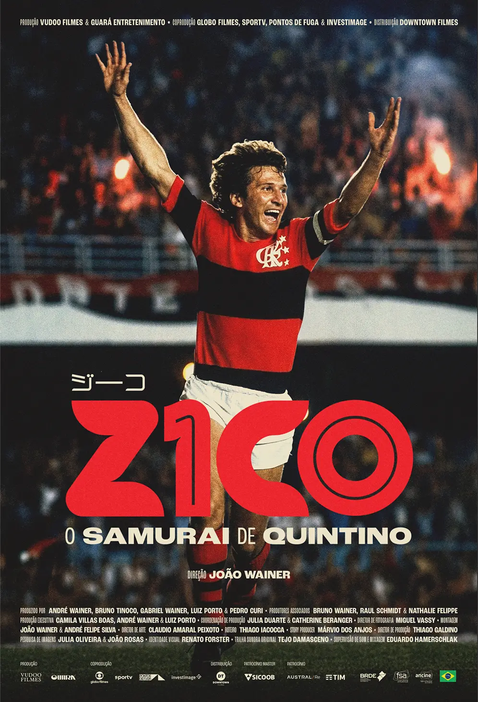

No subúrbio carioca, um ídolo nasceu com espírito de guerreiro e humildade de um Rei. O Brasil vai, mais uma vez, assistir a um dos maiores craques da história do futebol. Desta vez, porém, o estádio vai ser a sala de cinema.
ZICO - O SAMURAI DE QUINTINO chega às telas com um olhar único sobre a vida do Galinho. O filme vai além dos inesquecíveis gols e das atuações antológicas, trazendo imagens raras, registros de arquivo pessoal e bastidores inéditos. Quem conta a história é o próprio Zico, acompanhado de quem viveu cada momento com ele: os pais, os irmãos, a esposa, os filhos e os grandes companheiros de equipe.
O Arthurzico da família Coimbra. O Camisa 10 da Gávea.
O ídolo da Amarelinha. O revolucionário do Japão.
O marido da Sandra, pai e avô. Todos eles cabem
em ZICO - O SAMURAI DE QUINTINO.


"Mais do que as conquistas e glórias do Zico, venho aprendendo com ele lições que vão além do futebol, como humildade, respeito e gentileza."
